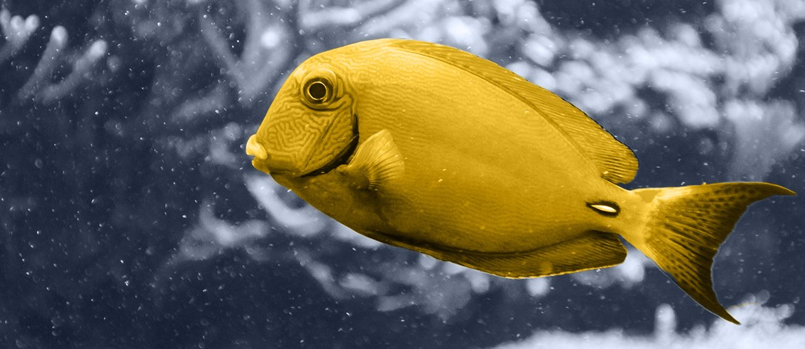

1
Map The Flow
Map concept, high-res, low-res, integration, outsourcing, and QA handoffs for BGE2 assets, with owners named.
Beyond Good & Evil 2 is a rare project with rich characters and co-op play. It also uses a proprietary engine. We would help QA find character issues earlier, without slowing art leads.
Saw Ubisoft Montpellier is hiring a Team Lead Character for Beyond Good & Evil 2. That role points to asset flow, partner handoffs, and quality checks under pressure.
That search tells us Montpellier is making character work more stable for Beyond Good & Evil 2. The role asks for clear priorities, partner control, and asset quality. It spans concept, high resolution, low resolution, and integration. For QA, the hard part is not more review meetings. It is seeing risk before build review, where fixes cost more and delay teams.
Engagement model: a dedicated QA tools squad under your producer and QA leads. Duration: an 8-week pilot with weekly demos.
Map concept, high-res, low-res, integration, outsourcing, and QA handoffs for BGE2 assets, with owners named.
Build a small React view for asset status, test evidence, owner, and open risk together.
Add Python checks for naming, version drift, missing metadata, and build-ready rules before QA review starts.
Run weekly demos with QA, art, and production, so fixes match the Voyager engine workflow.
Hand over source, tests, and runbooks, so Ubisoft keeps control and can extend the pilot.
Elinext is a full-cycle software development company, founded in 1997, with about 700 in-house specialists. We do not use freelancers or subcontractors in delivery. For Ubisoft, the useful part is QA automation, DevOps support, and web tools. Our teams also cover React, Node.js, Python, C/C++, and C# work. We work under ISO 9001 and ISO 27001 when quality, security, and partner access matter. Clients include Siemens, Broadcom, Volkswagen, TRUMPF, TUI, and Parrot across demanding product programs. That depth fits a QA tools squad, while Montpellier keeps ownership.

Reduced manual QA effort with a custom testing tool.
Read case study
Built 3D game assets with Maya and 3D Max.
Read case study